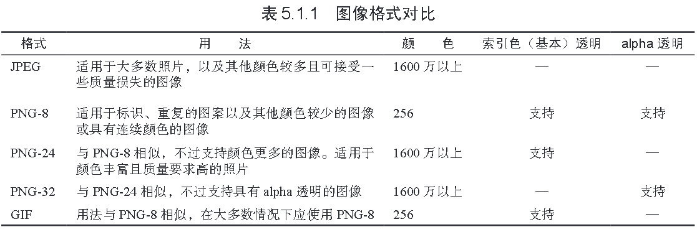
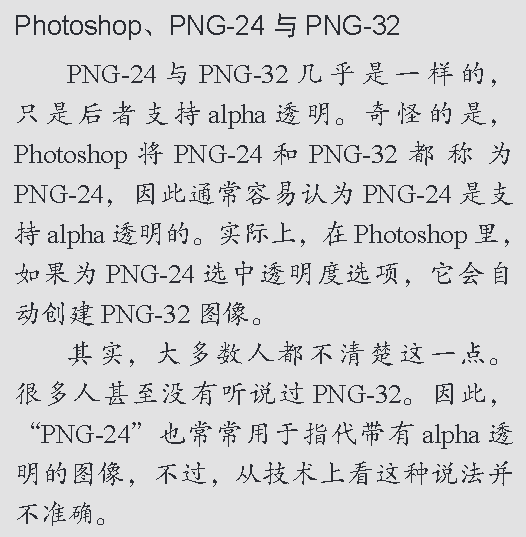

1. 格式与下载速度
当前，Web上用的最广泛的三种格式是GIF、PNG和JPEG。我们的目标是选择质量最高，同时文件最小的格式。

WebP图像格式
谷歌建立了另一种图像格式，名为WebP。
这种格式既支持有损压缩也支持无损压缩，它产生的文件大小也远小于JPEG和PNG。跟PNG一样，它还支持alpha透明。
2. 颜色
大多数计算机显示器可以显示数以百万计的颜色 ，但也有例外的情况。
有的图像格式的调色板是有限的。GIF和PNG-8图像只有256种颜色，对标志和图标来说通常这已经足够了。
JPEG、PNG-24和PNG-32均支持超过1600万种的颜色，因此照片和复杂的插图应选择这些格式。
不过，需要指出的是，对于这些图像，大多数情况下应使用JPEG。
3. 大小（尺寸）
对于网站上的图像，多大合适呢？
简单地说 ，通常应控制在几百个像素宽。
可缩放矢量图形（SVG）
对于使用SVG图像语言创建的图像，无论放大还是缩小都不会影响其质量（以及其他的一些参数）。
而且，对于某个SVG图像来说，无论它在页面中显示的尺寸是多大，其文件大小总是恒定的。
目前，几乎所有的现代浏览器都提供基本的SVG支持
4. 透明度
可以利用透明度为图像创建非矩形的边缘，在图像的下面设置背景色或图案。
PNG和GIF都支持透明度，JPEG则不支持。
在GIF格式中，一个像素要么是透明的，要么是不透明的。这称作索引色透明（index transparency）。
而PNG则既支持索引色透明，又支持alpha透明（alpha transparency）。alpha透明可以控制一个像素透明的程度。
也就是说，一个像素可以部分透明，而非要么透明要么不透明。
这意味着具有复杂透明背景的图像使用PNG的效果要好于使用GIF的效果，因为使用PNG可以让边缘变得平滑，避免产生锯齿。
PNG-8既支持索引色透明，也支持alpha透明 ，但需要使用Fireworks这样的程序才能将图像保存为PNG-8格式。
Photoshop不支持alpha透明的PNG-8，但支持alpha透明的PNG-32。
这也是万维网上大多数透明PNG都 是PNG-32的原因。总之 ，对于透明图像，应使用PNG-8或PNG-32。后者允许使用超过256种颜色。

5. 动画
动画可以保存为GIF，但不能是JPEG或PNG。实际上，使用图像表现动画已经用得越来越少了。
（一种例外的情况是那些好玩的GIF动画，它们在Tumblr这类网站相当流行。）
我们通常使用CSS动画、JavaScript、HTML5 Canvas、SVG和Flash创建动画。
近几年，使用Flash创建的动画越来越少了。这主要是由于iOS不支持Flash，且其他标准的Web技术的能力和浏览器支持程度都提升了很多。